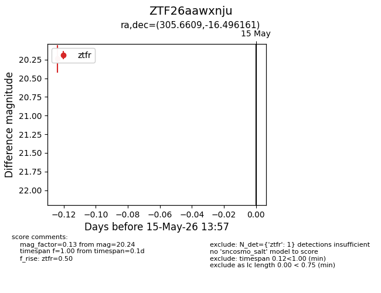
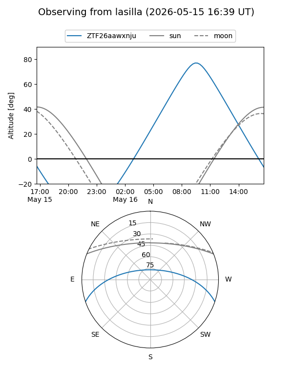
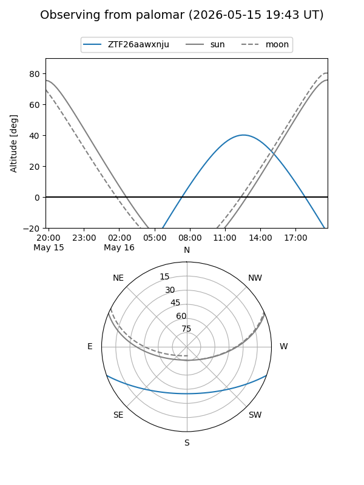

ZTF26aawxnju
Target ZTF26aawxnju at 2026-05-15 13:59
Aliases and brokers:
FINK: link
Lasair: link
ALeRCE: link
alt names
ZTF26aawxnju (ztf,fink_ztf)
Coordinates:
equatorial (ra, dec) = 305.6609,-16.49616
equatorial (HMS+DMS) = 20:22:38.61,-16:29:46.18
galactic (l, b) = (27.5498,-27.39903)
Flags:
Photometry:
last ztfr=20.24
1 ztfr detections
Lightcurve

Visibility


Additional plots